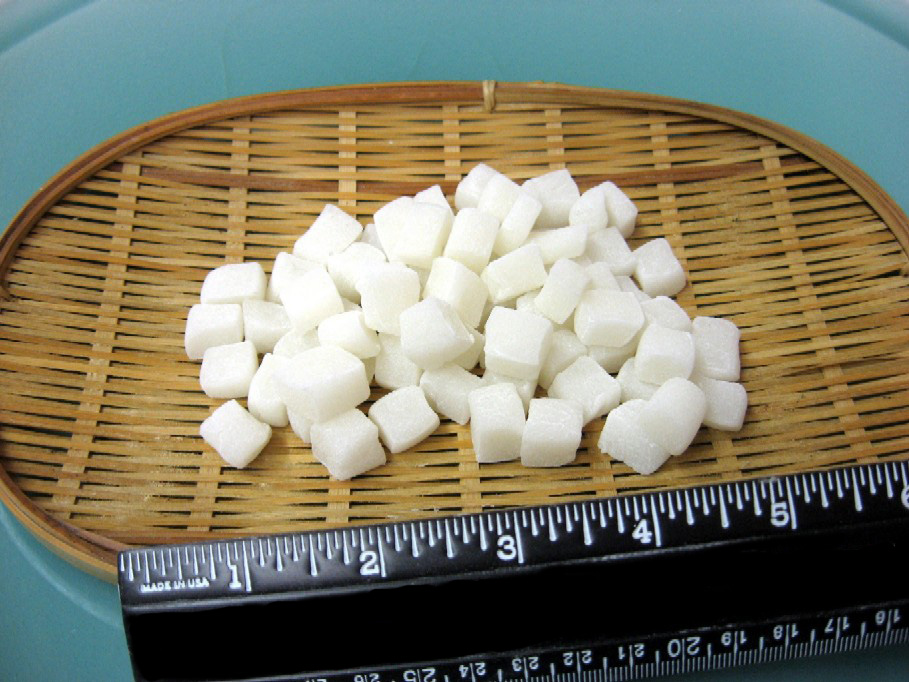

Family owned and operated since 1903
Store Location
315 East First St.
Los Angeles, CA 90012
(213) 625-8595
Store Hours
Sunday to Thursday:
8:00 am to 6:00 pm
Friday and Saturday:
8:00 am to 7:00 pm
Interested In Mochi Bits for your Frozen Yogurt Business?
These mochi bits are cut to a size that is ideal as a topping for the new frozen treats and yogurt desserts. However, our topping is fresher and made of the finest Fugetsu-do manju! Many frozen yogurt stores nationwide have found out how much better their product is with Fugetsu-do manju on the top.
These mochi bits can be sent anywhere in the country. It is shipped either 1 day or 2 day by Federal Express. A case size is 9x3 pound (lb.) bags, 27 pounds per case. Ordering just requires an email address to have a credit aplication emailed to you to open an account.
PLEASE NOTE: Due to the high demand, it is important that you email us at mochibits@gmail.com and write "Mochi Bits" as the subject header to make sure that you get your order in as soon as possible.
Have you heard the news? Don't be left out!
Fugetsu-do is the finest Japanese manju artisan in Los Angeles. You can check us out on Yelp and search for us on Google to see the countless positive reviews on our products. We thank anyone who has enjoyed our manju over the many years. The over 100 positive reviews and the 100 years of being in business can't be wrong!
Contact our store (213-625-0778) for more information!